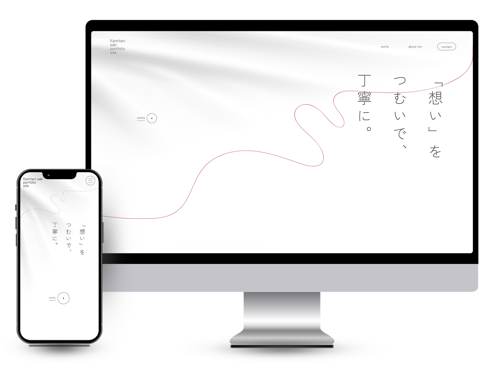

works
制作実績
自主制作 ポートフォリオサイト

- 概要
- デザインスクール「デザスタ」の卒業制作として、自身のポートフォリオサイトを制作。コンセプトの立案から素材の選定、コーディングまでを一貫して手がけ、糸をモチーフにシンプルで機能的なデザインをテーマに仕上げたポートフォリオサイト。
- 使用ツール
- Adobe Photoshop / Illustrator
- 使用言語
- HTML / css / jQuery
- 担当
- デザイン/コーディング
- 制作期間
- 2ヶ月
- レスポンシブ
- スマートフォン
- 制作ポイント
-
人の想いを紡ぎ、それを形にしていく過程を糸をモチーフに表現しました。見やすさとわかりやすさを重視し、作品が際立つシンプルなデザインに仕上げています。訪れた方がすぐに作品を閲覧できるよう、ファーストビューには「Works」ボタンを配置しました。
また、Aboutmeページでは自身の紹介や好きなことを掲載し、私という人間をイメージしやすくなる工夫をしています。
コーディングでは、CSSのアニメーションやjQueryを活用し、サイトの様々な箇所に動きをつけました。次にどんどん進みたくなるように、押しやすいボタンも各所に配置し、UIを向上させる工夫をしました。